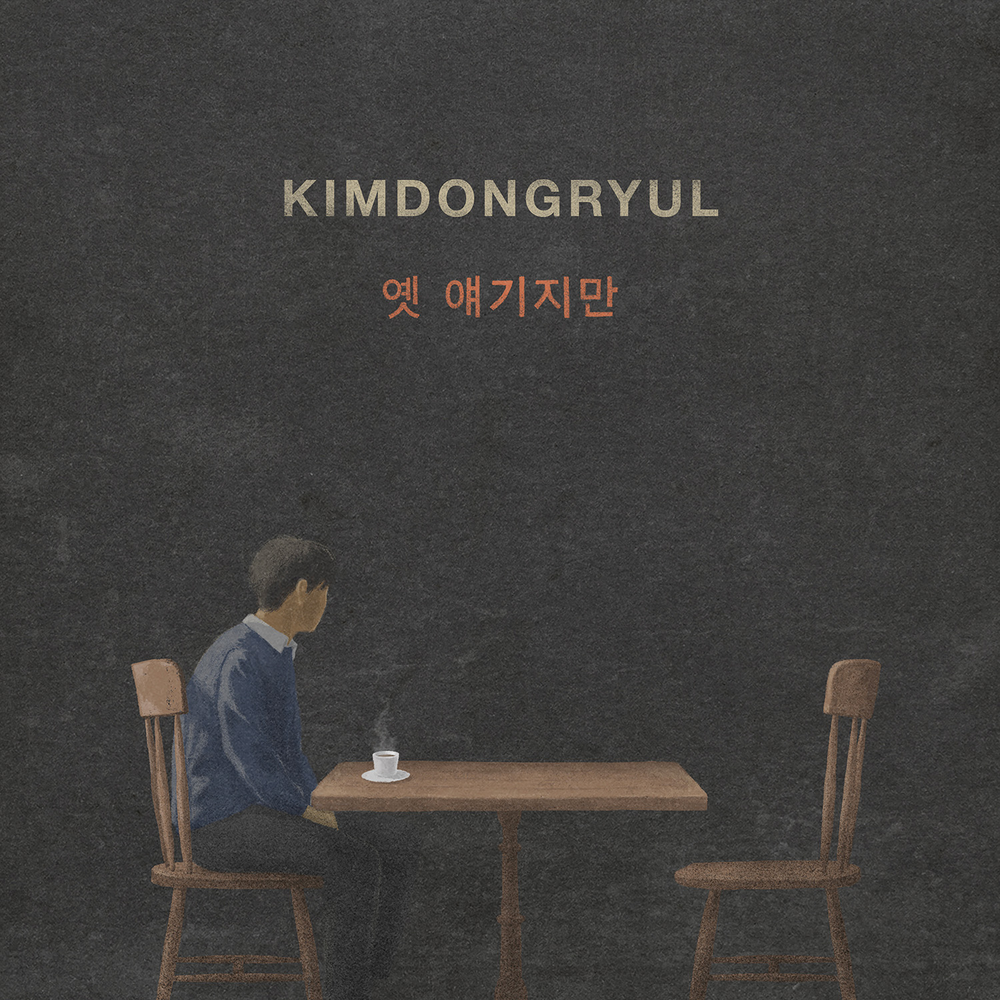

안녕하세요 라보엠입니다.
김동률의 신곡 옛 얘기지만이 2023년 11월 29일 발매되었습니다.
김동률 옛 얘기지만
김동률 옛 얘기지만 가사
옛 얘기지만
다 지나버린 얘기지만
느닷없이 또 날 괴롭혔고
곱씹으면 다 알 것 같아
그래서 더 난 미치겠어
왠지 모를 화가 났었고
그날따라 난 아이 같았고
하지 말아야 할 말과 눈빛 말투 몸짓
모두 네게 쏟아냈지
넌 아무 말도 하지 않았지
그처럼 슬픈 눈을 하고선
차라리 나에게 화라도 냈담
그럼 난 편했을까
그렇게 내게 벌을 준 걸까
먼 얘기지만
이룰 수 없는 얘기지만
버릇처럼 또 난 떠올렸고
셀 수도 없이 고치고 또 바꾸고 빌고
그런 헛된 상상 속에
넌 아무 말도 하지 않았지
그 대신 나를 안아 주었지
차라리 나에게 화라도 냈담
그럼 널 잊었을까
그렇게 내게 벌을 준 걸까
김동률 옛 얘기지만 간단 후기
김동률의 노래에는 지나간 사랑에 대한 미련과 후회가 항상 묻어 있습니다. 이번 노래에도 진한 미련과 자신에 대한 한 숨이 가득차 있습니다. (자신에게 벌 그만 주시고 좋은 분 만나서 결혼하시면 좋겠...) 악기 구성은 피아노와 오케스트라 위주이지만 신디사이저 라인이 추가되어 기존의 김동률의 노래와 다른 유니크한 느낌을 줍니다. 이미 겨울이 온듯하지만 가을 느낌 물씬 느낄 수 있는 김동률의 신곡 옛 얘기지만 들으면서 추억에 잠겨보시길 추천드립니다.
